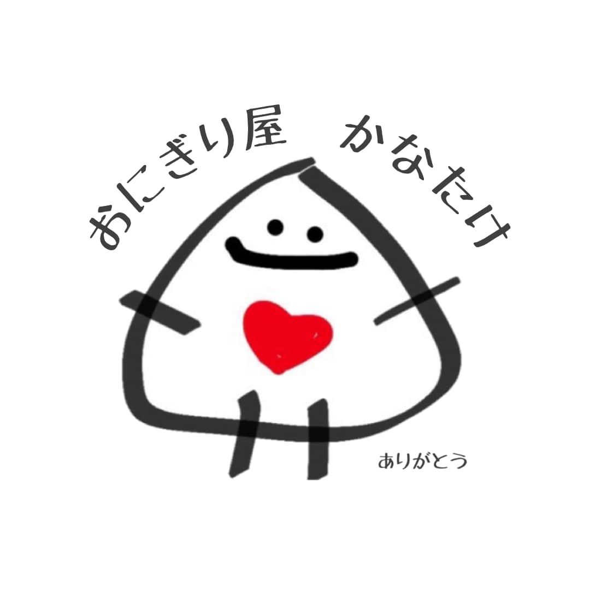

<!DOCTYPE html>
<html lang="ja">
<head>
  <meta charset="utf-8" />
  <meta name="viewport" content="width=device-width, initial-scale=1" />
  <title>2025年9月マップ</title>

  <!-- Leaflet -->
  <link
    rel="stylesheet"
    href="https://unpkg.com/leaflet@1.9.4/dist/leaflet.css"
    integrity="sha256-p4NxAoJBhIIN+hmNHrzRCf9tD/miZyoHS5obTRR9BMY="
    crossorigin=""
  />
  <script
    src="https://unpkg.com/leaflet@1.9.4/dist/leaflet.js"
    integrity="sha256-20nQCchB9co0qIjJZRGuk2/Z9VM+kNiyxNV1lvTlZBo="
    crossorigin=""
  ></script>

  <style>
    html, body, #map { height: 100%; margin: 0; }
    /* 右下のリスト */
    .spot-list {
      position: fixed;
      right: 10px;
      bottom: 10px;
      max-width: 58vw;
      max-height: 52vh;
      overflow: auto;
      padding: 12px 14px;
      border-radius: 12px;
      background: rgba(255,255,255,0.92);
      box-shadow: 0 6px 18px rgba(0,0,0,0.18);
      -webkit-backdrop-filter: blur(6px);
      backdrop-filter: blur(6px);
      font-family: "Hiragino Sans", "Noto Sans JP", system-ui, -apple-system, sans-serif;
      font-size: 13px;            /* ← 以前より少し小さめ */
      line-height: 1.5;
      z-index: 600;
    }
    .spot-list h3 {
      margin: 0 0 6px; font-size: 13px; font-weight: 700; color: #444;
    }
    .spot-list ol { margin: 0; padding-left: 1.2em; }
    .spot-list li { margin: 2px 0; word-break: break-word; }

    /* ピンの番号バッジ */
    .pin-wrap {
      position: relative;
      width: 44px; height: 44px;
    }
    .pin-wrap img {
      width: 44px; height: 44px; display: block;
    }
    .pin-badge {
      position: absolute;
      right: -6px; top: -8px;
      min-width: 18px; height: 18px;
      padding: 0 4px;
      border-radius: 10px;
      background: #222;
      color: #fff;
      font: 600 11px/18px system-ui, -apple-system, "Hiragino Sans", "Noto Sans JP", sans-serif;
      text-align: center;
      box-shadow: 0 0 0 2px #fff;
    }

    /* ポップアップの角丸＆色 */
    .leaflet-popup-content-wrapper {
      border-radius: 12px !important;
      background: #fffdf8 !important;
    }
    .leaflet-popup-content {
      margin: 10px 12px;
      font-family: "Hiragino Sans","Noto Sans JP",system-ui,-apple-system,sans-serif;
    }
    .popup-title { font-weight: 700; font-size: 16px; margin-bottom: 2px; }
    .popup-sub   { color:#666; font-size: 13px; margin-bottom: 6px; }
    .popup-link  { font-weight: 700; text-decoration: underline; }
  </style>
</head>
<body>
  <div id="map"></div>

  <!-- 右下リスト -->
  <aside class="spot-list" id="spotList">
    <h3>出店リスト（タップで地図）</h3>
    <ol id="spotOl"></ol>
  </aside>

  <!-- てめーが用意済みの座標入りデータ -->
  <script src="spots.js"></script>

  <script>
    // ===== 地図 =====
    const map = L.map('map', { zoomControl: true })
      .setView([35.80, 139.80], 9.6);

    // 安定CDNの淡色タイル（CARTO）
    L.tileLayer(
      'https://{s}.basemaps.cartocdn.com/light_all/{z}/{x}/{y}{r}.png',
      {
        attribution:
          '&copy; <a href="https://www.openstreetmap.org/copyright">OSM</a> &copy; CARTO',
        subdomains: 'abcd',
        maxZoom: 19
      }
    ).addTo(map);

    // カスタムアイコン（背景抜きのおにぎり）
    const makeDivIcon = (num) => L.divIcon({
      className: '',
      iconSize: [44,44],
      iconAnchor: [22,22],
      popupAnchor: [0,-16],
      html: `
        <div class="pin-wrap">
          
          <span class="pin-badge">${num}</span>
        </div>`
    });

    // ===== ①重なり対策：同一座標を放射状に微オフセット =====
    // 80m程度の半径でズラす（同一点にn個あれば円周上に展開）
    function offsetLatLng(lat, lng, i, n){
      if (n <= 1) return [lat, lng];
      const Rm = 80; // meters
      const theta = (2*Math.PI*i)/n;
      const dLat = (Rm/111320) * Math.cos(theta);
      const dLng = (Rm/(40075000*Math.cos(lat*Math.PI/180)/360)) * Math.sin(theta);
      return [lat + dLat, lng + dLng];
    }

    // 同一座標グループ化（小数5桁で丸めて判定）
    const groups = new Map();
    spots.forEach((s, idx) => {
      const key = `${s.lat.toFixed(5)},${s.lng.toFixed(5)}`;
      if (!groups.has(key)) groups.set(key, []);
      groups.get(key).push({ ...s, _idx: idx });
    });

    // 日付順で並べ、番号を振る
    const sorted = [...spots].sort((a,b)=>a.date.localeCompare(b.date));

    // ===== ②ピン配置＆ポップアップ =====
    const markers = [];
    sorted.forEach((spot, orderIdx) => {
      const key = `${spot.lat.toFixed(5)},${spot.lng.toFixed(5)}`;
      const arr = groups.get(key);
      const posInGroup = arr.findIndex(o => o.date === spot.date && o.place === spot.place);
      const [lat2, lng2] = offsetLatLng(spot.lat, spot.lng, posInGroup, arr.length);

      const m = L.marker([lat2, lng2], { icon: makeDivIcon(orderIdx+1) }).addTo(map);

      const when = spot.time ? `${spot.date.replace(/2025-09-/,'9/')}　${spot.time}` 
                             : `${spot.date.replace(/2025-09-/,'9/')}`;
      const gUrl = `https://www.google.com/maps/search/?api=1&query=${encodeURIComponent(spot.place)}&query_place_id=&center=${spot.lat},${spot.lng}&zoom=18`;

      m.bindPopup(`
        <div class="popup-title">${spot.place}</div>
        <div class="popup-sub">${when}</div>
        <a class="popup-link" href="${gUrl}" target="_blank" rel="noopener">Googleマップで開く</a>
      `);

      markers.push(m);
    });

    // ===== ③右下のリスト =====
    const ol = document.getElementById('spotOl');
    sorted.forEach((s, i) => {
      const li = document.createElement('li');
      li.textContent = `${s.place}`;
      li.style.cursor = 'pointer';
      li.addEventListener('click', () => {
        map.setView([s.lat, s.lng], 14);
        markers[i].openPopup();
      });
      ol.appendChild(li);
    });

    // 初期表示で全ピンが入るように
    const group = L.featureGroup(markers);
    map.fitBounds(group.getBounds().pad(0.2));
  </script>
</body>
</html>
